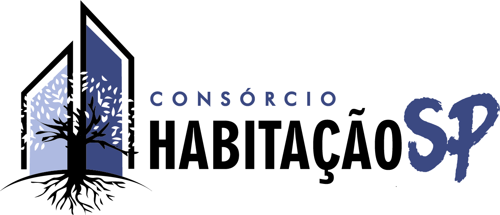

Chegou o momento mais importante do calendário esportivo mundial: discutir futebol no horário de trabalho com a desculpa de que “é pelo bolão”.
Os palpites oficiais serão registrados através de formulários do Google Forms. A cada fase um novo formulário será disponibilizado conforme as seleções forem avançando na competição.
O formulário da 1ª Rodada já está liberado:
⚽ Enviar palpites da 1ª Rodada
Prepare seus palpites, acompanhe a classificação e dispute o título de maior especialista em futebol da empresa (ou pelo menos evitar ser zoado por errar um Brasil x Haiti).
A cada partida você poderá somar pontos acertando vencedores e placares. E atenção: os confrontos das fases finais terão peso maior, então aquele chute totalmente aleatório na final poderá valer mais do que semanas de estudo tático.
Além dos jogos, também teremos bônus especiais:
Boa sorte a todos. Que os palpites sejam fortes e que o VAR jamais atrapalhe o caminho rumo ao topo do ranking.
| Acertar vencedor ou empate | 3 pts |
| Acertar gols de uma equipe | 1 pt |
| Acertar gols das duas equipes | 2 pts |
| Acertar o placar exato | 5 pts |
| Erro total | 0 pts |
Exemplo:
Palpite: Brasil 2 x 1 Argentina
Resultado: Brasil 2 x 1 Argentina
✓ Acertou o vencedor = 3 pts
✓ Acertou os gols do Brasil = 1 pt
✓ Acertou os gols da Argentina = 1 pt
Total = 5 pontos
| Fase | Peso |
|---|---|
| 1ª Rodada | x1 |
| 2ª Rodada | x1,5 |
| Oitavas de Final | x2 |
| Quartas de Final | x3 |
| Semifinal | x4 |
| Disputa de 3º Lugar | x1,5 |
| Final | x5 |